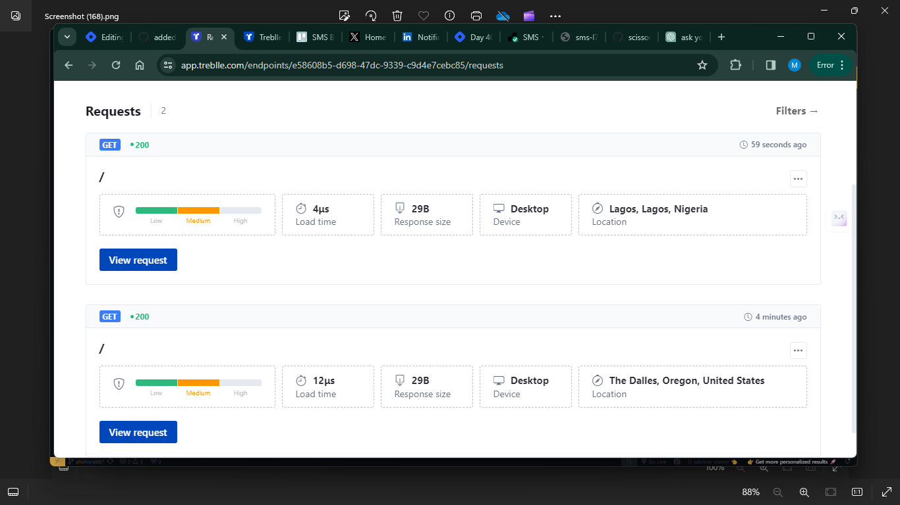
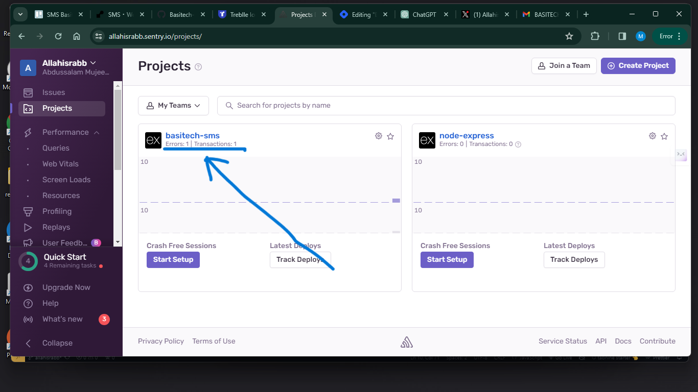

BASITECH WORK EVALUATION
SMS - School Management System, designed for the sole purpose of controlling schools’ data virtually 💻.
Disclaimer: Certain information will not be disclosed, as the company prioritizes privacy as a paramount concern.
I initially joined this start-up as an intern, only to discover that I was assigned the role of a senior backend developer 🥲, as there was no one else in that position on the team—just me and another intern. Stepping into this unexpected role has been quite demanding. The beginning was challenging; without a lead for the backend team, our plans seemed to go nowhere. We repeatedly drafted and redrafted, planned and replanned. I was forced to lead the team, and below are the things and contributions I have made so far:
-
Database diagrams - I drew database diagrams to get a view of the database structure, how the models are connected to each other and the school, providing a clear reference for developers that will join in the future, and facilitate better database management.
-
API workflows - I established workflows to visualize our processes, covering authorization, validation, specific queries, error handling, and more. This proved immensely beneficial, reducing cognitive load when writing actual code since the thinking part was addressed. Having a roadmap for building each route streamlined the process, benefiting both me and my colleague. Code reviews became straightforward as we had predefined processes to follow. Night meetings were crucial, allowing us to anticipate and address all possible scenarios, especially considering the sensitive nature of dealing with school data.
Meticulous observation and thoughtful planning were essential in constructing these workflows. Recognizing that my workflows are not flawless, I'm committed to enhancing my thinking capacity for improved and more effective workflow drafting in the future.
-
Error Handling - Upon reviewing the error handling middleware crafted by my colleague, I sought ways to fortify security and safeguard against application disruptions. Conducting a thorough examination of the implemented routes.
I identified an opportunity to enhance resilience by incorporating try-catch methods, thus minimizing the risk of breakdowns during unforeseen scenarios.

Additionally, I prioritized the implementation of robust logging mechanisms and continuous monitoring to expedite the detection of potential lags within the application. It is crucial to acknowledge that these measures primarily address the backend, and our commitment to excellence remains steadfast. I remain open to exploring advanced error-handling techniques beyond our existing expertise.
I also added the Helmet library for enhancing the security of the application. I am very sure that it will help mitigate common web vulnerabilities and provide an additional layer of defense against potential threats.

-
Authentication - My colleague was responsible for managing JWT authentication, initially opting for the conventional method of storing it as a cookie. However, concerns arose regarding the security implications of this approach, whether the token was encoded or not, especially when dealing with sensitive information. Recognizing the potential risks associated with storing crucial data in cookies, I deliberated on a more secure strategy. Acknowledging the multitude of potential damages, ranging from XSS attacks to man-in-the-middle attacks, I sought to balance information persistence with enhanced security measures.
As a result, I chose to implement the signed and httpOnly properties for the cookie. By doing so, I ensured that access to the cookie is restricted exclusively to HTTP requests, providing a robust defense against alterations by client-side scripts. The inclusion of a signature introduces an additional layer of security, enabling the server to verify the cookie's integrity upon its return and mitigating the risk of tampering during transit.

-
Rate limiting - My unending thirst for security led me to rate limiting. I implemented it to control the rate at which requests are made to the API per IP address, within a specific timeframe. I did this to prevent abuse, protect resources, and ensure fair usage of the application, protecting the server from overload and improving overall service reliability.
Another reason I implemented rate limiting is to prevent brute-force attacks on user accounts. By limiting the number of login attempts within a specific timeframe, the system can thwart unauthorized attempts to gain access.

While knowing that achieving 100% security is unattainable, my foremost commitment is to diligently implement measures that enhance the safety and security of the application for the users.
-
Testing and documentation with Postman - How could I be certain that the code I penned, along with that of my colleague, didn't exhibit signs of mediocrity? It's not about claiming perfection or superiority, but rather emphasizing the importance of crafting functional code. Even though I acknowledge there's always room for improvement, I actively anticipate refactoring certain sections. To validate the reliability of the codebase, I carefully tested each route using Postman, ensuring flawless operation and error-free functionality. Once functionality was confirmed, I documented each route, providing thorough descriptions for safe and efficient utilization. The resulting documentation is tailored to ease API consumption for front-end developers, offering clear guidance for both effective and secure implementation.


-
Readme - I assumed the responsibility of composing the README, providing thorough instructions on project initiation. I aimed to simplify the process for incoming developers, enabling them to set up the API on their local machines independently, guided solely by the README file.

-
Monitoring - I added monitoring system to the API, with the help Treblle, a monitoring platform designed to track the performance and health of your applications and infrastructure. I need observe the health and the performance of our company's API in real-time. This will enable me to easily identify issues. Infact, my non-technical colleagues can monitor it alongside.
I wrote an article on how to monitor your API using Treblle, click here to read it.
 -
Logging - I added logging system to the API, with the help Sentry, a widely used platform for error tracking and monitoring. It specializes in capturing and aggregating error and exception data from applications. I integrated it to the API, and boom it made sense.
I wrote an article on how to track errors and events in your API using Sentry. click here to read.
 -
Deployment - I am responsible for overseeing and managing the deployment process of the API. This includes planning and coordinating the deployment, ensuring that the API is correctly configured and optimized for performance, and monitoring the deployment to address any issues that arise.

-
Code Reviews - The position of code reviewer was added to my tasks in the team, and I hold this position dearly, and it's really adding to my value. I review the codes once per week due to the number of tasks I hold. And this is really improving my skills, not only in coding but also in how the web works and how to protect it from cyber attacks by avoiding the overlooked practices of most software engineers. This doesn't mean I'm perfect because learning doesn't stop, and there are lots of things I still need to learn to build a very secure and functional application.
-
Bug reports - I also started writing bug reports on some tested codes to improve not only my observation skills but also the quality of the product. I provide detailed information about the problem, making it easier for whoever is working (could be me) to understand and address the issue quickly. This would help us to resolve unnoticed bugs and implement preventative measures to avoid similar issues in the future.